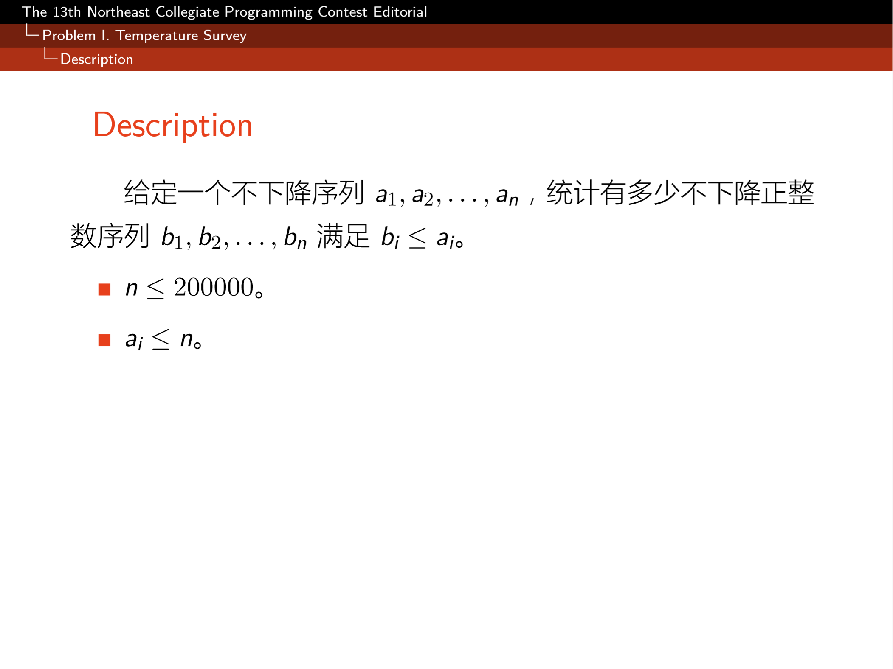
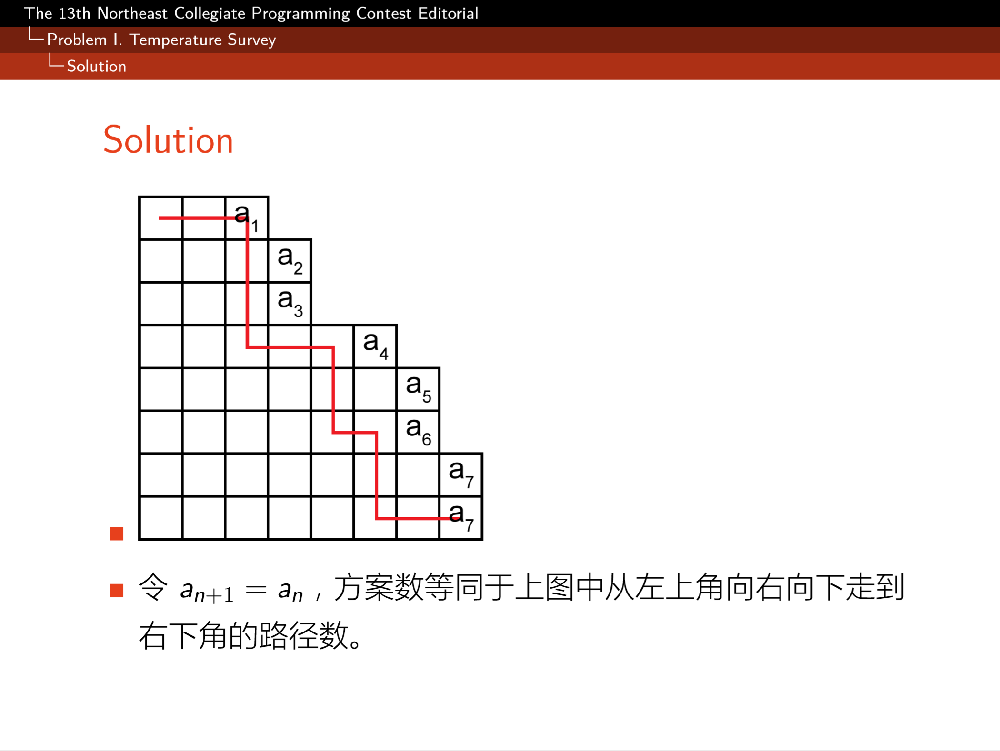
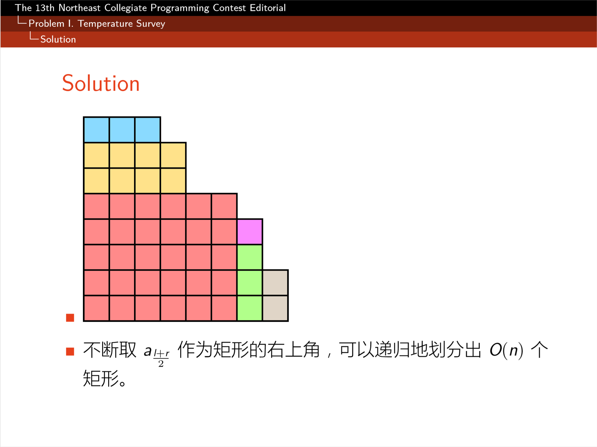
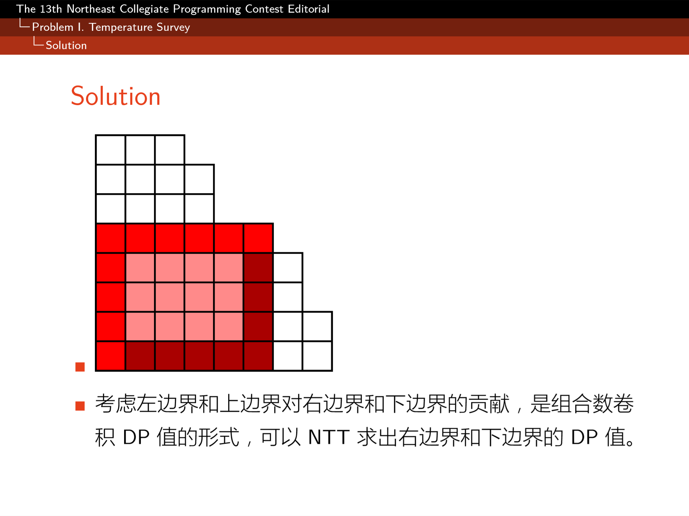
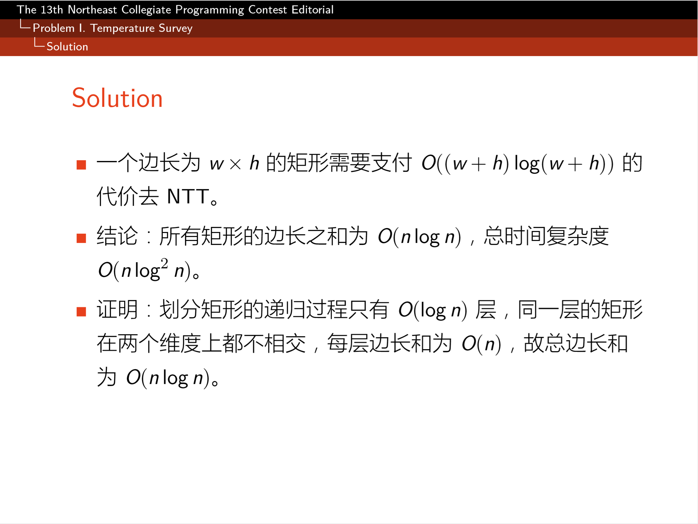
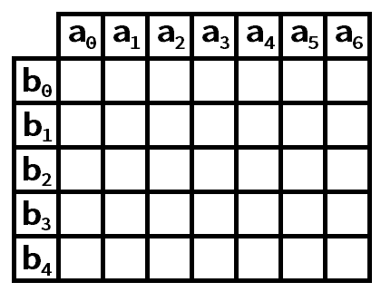

May 30, 2019 由 小羊
题目链接：Gym 102220I
这个题目的动态规划解法应该挺好想的。
然而这显然是 的做法，过不了这题。
那么我们来看看quailty的Editorial啦~





这里仅仅补充一下关于矩形的转移的部分。

考虑宽度为 ，高度为 的一个矩形的二维前缀和
显然由于对称性，我们可以把a和b分开计算。
先考虑如何得到下底边的值。
再考虑右边的值
先考虑
让 ，然后补充几项，可以得到
然后让我们换个式子再看看这个看起来可以NTT的东西
就可以很快的计算这个方格的右腰和下底啦~
也是一种类似于分治NTT的思想呢。
#include <bits/stdc++.h>
using namespace std;
typedef long long lld;
const int MOD = 998244353, L=20, MAXL = 1<<L;
int rev[MAXL], wmk[MAXL], inv[MAXL], len, N;
int fac[MAXL], invs[MAXL];
void init()
{
wmk[0] = inv[1] = fac[1] = 1;
invs[1] = fac[0] = invs[0] = 1;
long long t = 15311432; //G^119
for (int i = 0; i < 23-L; i++)
t = t * t % MOD;
for (int i = 1; i < MAXL; i++)
wmk[i] = wmk[i-1] * t % MOD;
for (int i = 2; i < MAXL; i++)
fac[i] = 1ll * fac[i-1] * i % MOD;
for (int i = 2; i < MAXL; i++)
inv[i] = 1ll * (MOD-MOD/i) * inv[MOD%i] % MOD;
for (int i = 2; i < MAXL; i++)
invs[i] = 1ll * invs[i-1] * inv[i] % MOD;
}
int combine(int n, int m)
{
return 1ll * fac[n] * invs[m] % MOD * invs[n-m] % MOD;
}
void discreteFourierTransform(vector<int> &a)
{
if (!wmk[1]) init();
for (int i = 0; i < N; i++)
if (i < rev[i]) swap(a[i], a[rev[i]]);
for (int m = 2, m2 = 1; m <= N; m <<= 1, m2 <<= 1)
for (int k = 0; k < N; k += m)
for (int j = 0, t, u; j < m2; j++)
t = 1ll * wmk[MAXL/m*j] * a[k+j+m2] % MOD,
u = a[k+j], a[k+j] = (u+t)%MOD, a[k+j+m2] = (u-t+MOD)%MOD;
}
void multiply(vector<int> &a, vector<int> b)
{
int need = int(a.size() + b.size() - 1);
if (need <= 128)
{
vector<int> c = a;
a.assign(need, 0);
for (int i = 0; i < int(c.size()); i++)
for (int j = 0; j < int(b.size()); j++)
a[i+j] = (a[i+j] + 1ll * c[i] * b[j]) % MOD;
}
else
{
len = 0, N = 1;
while (N < need) ++len, N <<= 1;
for (int i = 0; i < N; i++)
rev[i] = (rev[i>>1]>>1)|((i&1)<<(len-1));
if (a.size() < N) a.resize(N);
if (b.size() < N) b.resize(N);
bool equals_ab = a == b;
discreteFourierTransform(a);
if (equals_ab) b = a;
else discreteFourierTransform(b);
for (int i = 0; i < N; i++)
a[i] = int(1ll*a[i]*b[i]%MOD*inv[N]%MOD);
reverse(a.begin()+1, a.begin()+N);
discreteFourierTransform(a);
a.resize(need);
}
}
struct solver : map<pair<int,int>,int>
{
int operator()(int a, int b) const
{
if (a < 0 || b < 0) return 0;
return this->at(make_pair(a, b));
}
int &operator()(int a, int b)
{
return (*this)[make_pair(a, b)];
}
} dp;
void solveRect(int x, int y, int width, int height)
{
vector<int> bottom(width);
vector<int> right(height);
// to solve the top to bottom
{
vector<int> A(width);
for (int i = 0; i < width; i++)
A[i] = dp(y-1, x+i);
vector<int> B(width);
for (int i = 0; i < width; i++)
B[i] = combine(height-1+i, i);
multiply(A, B);
for (int i = 0; i < width; i++)
bottom[i] += A[i];
}
// to solve the top to right
{
vector<int> A(width);
for (int i = 0; i < width; i++)
A[i] = 1ll * dp(y-1, x+i) * invs[width - 1 - i] % MOD;
vector<int> B(width + height - 1);
for (int i = 0; i < width + height - 1; i++)
B[i] = fac[i];
multiply(A, B);
for (int i = 0; i < height; i++)
right[i] += 1ll * A[i+width-1] * invs[i] % MOD;
}
// to solve the left to right
{
vector<int> A(height);
for (int i = 0; i < height; i++)
A[i] = dp(y+i, x-1);
vector<int> B(height);
for (int i = 0; i < height; i++)
B[i] = combine(width-1+i, i);
multiply(A, B);
for (int i = 0; i < height; i++)
right[i] += A[i];
}
// to solve the left to bottom
{
vector<int> A(height);
for (int i = 0; i < height; i++)
A[i] = 1ll * dp(y+i, x-1) * invs[height - 1 - i] % MOD;
vector<int> B(height + width - 1);
for (int i = 0; i < height + width - 1; i++)
B[i] = fac[i];
multiply(A, B);
for (int i = 0; i < width; i++)
bottom[i] += 1ll * A[i+height-1] * invs[i] % MOD;
}
for (int i = 0; i < width; i++)
dp(y+height-1, x+i) = bottom[i] % MOD;
for (int i = 0; i < height; i++)
dp(y+i, x+width-1) = right[i] % MOD;
}
const int MAXN = 2e5+5;
int a[MAXN];
void solve(int l, int r, int b)
{
while (l <= r && a[l] < b) l++;
if (l > r) return;
int m = (l + r) >> 1;
solve(l, m-1, b);
printf("solveRect(%d, %d, %d, %d);\n", b, m, a[m]-b+1, r-m+1);
solveRect(b, m, a[m]-b+1, r-m+1);
solve(m+1, r, a[m]+1);
}
int main()
{
init();
int T, n;
scanf("%d", &T);
while (T--)
{
dp.clear();
dp(0, 1) = 1;
scanf("%d", &n);
for (int i = 1; i <= n; i++)
scanf("%d", &a[i]);
a[n+1] = n;
solve(1, n+1, 1);
printf("%d\n", dp(n+1, n));
}
return 0;
}